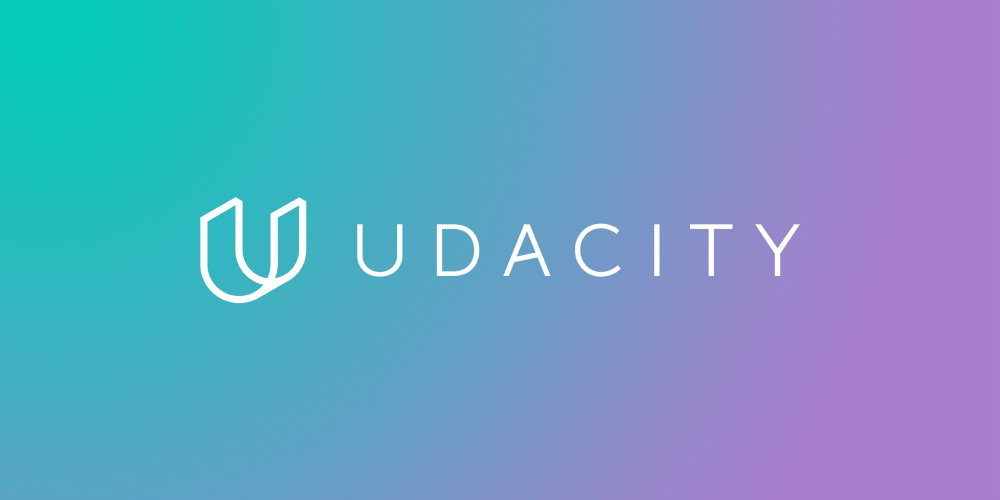

A la hora de buscar cursos online gratis generalmente tenemos como objetivo encontrarlos en plataformas que ofrezcan cursos de universidades u organizaciones de renombre. La formacion online esta siendo un fenomeno en estos ultimos años y ha cambiado el modo de obtener aprendizaje y a su vez ofrece posibilidades de obtener una enseñanza adicional en el ambito que estes trabajando/estudiando actualmente o para poder adquirir flexibilidad en cualquier lugar donde nos encontremos. La educacion a travez de los años va cambiando y estas plataformas forman parte de ello, el presente y futuro de este cambio.
5 Paginas web para realizar cursos gratis online
Se han seleccionado este listado con las mejores paginas web de areas populares en los trabajos remotos.
GOOGLE ACTIVATE
Google Activate Activate es una página web de cursos gratis online de Google. A través de esta página puedes encontrar formación gratuita en competencias digitales, excelente para personas que quieran iniciarse en el mundo digital. Los cursos son creados en su mayoría por Google, aunque también hay reconocidas universidades y asociaciones como coautores. Todos los cursos son completamente gratuitos, con excepción de algunos en los que debes pagar la certificación. Sin embargo, tomarlos no tiene ningún costo. Las áreas principales de los cursos son marketing digital, datos y tecnología y desarrollo personal.
EDX
EdX Es un proveedor de cursos en linea masivo y abierto. Trabajan con universidades y organizaciones lideres a nivel mundial y ofrecen cursos en linea de alta calidad a estudiantes de todo el mundo. Cuenta con mas de +3500 cursos donde constan de contenido de texto y video, foros de discusion y varios tipos de problemas y evaluaciones. La mayoria de los crusos de EdX se pueden acceder totalmente gratis y la mayoria tambien tienen un costo opcional para acceder a tareas calificadas y poder conseguir un certificado con un costo que varia segun el curso. La modalidad de certificado son una buena forma de mostrar las habilidades y conocimientos adquiridos, y te pueden ayudar en tu carrera profesional o academica.
FACEBOOK BLUEPRINT
Facebbok Blueprint es una plataforma de Facebook en la que ofrecen distintas capacitaciones sobre las herramientas de Instagram, Messenger y WhatsApp. Los cursos son bastante interesantes, ofrecen una gran cantidad de contenidos y son completamente gratuitos. Además de esto, también tienen un programa de certificaciones bastante reconocidos en el ámbito profesional. Sin embargo, los certificados tienen un costo adicional ya que son exámenes que engloban diferentes características y cursos.
HUBSPOT ACADEMY
HubSpot Academy HubSpot es un desarrollador y comercializador de productos de software que ofrece una suite completa de herramientas de marketing, ventas y atención al cliente para empresas de todo tamaño. Es bien interesante porque es de estas plataformas que tienen su propia academia, no sólo te venden el servicio Pero también te capacitan en cómo usarlo. Tienen todo tipo de cursos online gratis, es increíble. Además están súper actualizados y los tienen en diversos idiomas, al igual que Google Actívate, hay ciertos certificados que requieren un tipo de membresía diferente. Sin embargo, tomar los cursos es completamente gratuito. La gran mayoría de los cursos están en inglés, sin embargo, tienen una gran oferta de cursos online gratis en español. Por lo que creo que es una excelente opción.
UDACITY
Udacity funciona como una plataforma de aprendizaje en línea, especializada en cursos abiertos y cursos de nanogrado. Sus cursos están más enfocados en las siguientes áreas: Tecnología, Ciencias de la Computación, TI, Ciencia de los datos.
Independientemente del área de especialización que esté buscando mejorar, para que pueda emprender efectivamente la capacitación en cualquier curso técnico y vocacional en Udacity, debe estar registrado en la plataforma y comprar el curso de interés. Incluso los cursos gratuitos requieren un registro previo antes de poder acceder a su contenido.
Udacity está acreditada, pero se incluye en la categoría con fines de lucro. Sus cursos se clasifican como cursos abiertos, ya que Udacity no es una institución de educación superior con formación académica. Sus cursos están más enfocados a la formación profesional a nivel técnico.